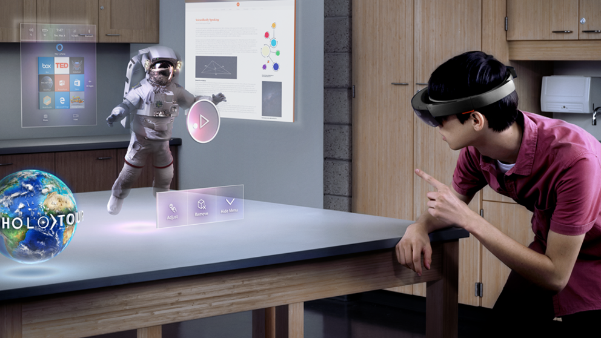

HTML5
HTML5 es un lenguaje markup (de hecho, las siglas de HTML significan Hyper Text Markup Language) usado para estructurar y presentar el contenido para la web. Es uno de los aspectos fundamentales para el funcionamiento de los sitios, pero no es el primero. Es de hecho la quinta revisión del estándar que fue creado en 1990. A fines del año pasado, la W3C la recomendó para transformarse en el estándar a ser usado en el desarrollo de proyectos venideros. Por así decirlo, qué es HTML5 está relacionado también con la entrada en decadencia del viejo estándar HTML 4, que se combinaba con otros lenguajes para producir los sitios que podemos ver hoy en día. Con HTML5, tenemos otras posibilidades para explotar usando menos recursos. Con HTML5, también entra en desuso el formato XHTML, dado que ya no sería necesaria su implementación.
HTML5 es la quinta revisión (mayor) de este estandar. Las principales novedades que trae son nuevas etiquetas para conseguir la Web Semántica (que los elementos o etiquetas aporten significado y no solo contenido) y nuevas APIs para permitir funcionalidades avanzadas de Javascript.
Referencias
Videos relacionados

CSS3
CSS3 es la última evolución del lenguaje de las Hojas de Estilo en Cascada (Cascading Style Sheets), y pretende ampliar la versión CSS2.1. Trae consigo muchas novedades altamente esperadas , como las esquinas redondeadas, sombras, gradientes , transiciones o animaciones, y nuevos layouts como multi-columnas, cajas flexibles o maquetas de diseño en cuadrícula (grid layouts).
El CSS sirve para definir la estética de un sitio web en un documento externo y eso mismo permite que modificando ese documento (la hoja CSS) podamos cambiar la estética entera de un sitio web, el mismo sitio web puede variar totalmente de estética cambiando solo la CSS, sin tocar para nada los documentos HTML o jsp o asp que lo componen.
Referencias
Videos relacionados

JAVASCRIPT
JavaScript es un lenguaje de programación creado por Netscape con el objetivo de integrarse en HTML y facilitar la creación de páginas interactivas sin necesidad de utilizar scripts-CGI o Java. Es importante no confundir JavaScript con Java. Java es un lenguaje de programación que cuenta con un compilador, por lo que permite crear tanto aplicaciones independientes como aplicaciones que se incrustan en una página HTML (applets).
JavaScript es un lenguaje de guiones (scripts) interpretado (no compilado) que funciona como una extensión de HTML . El código de un programa fuente JavaScript se inserta directamente en el documento HTML y no necesita ser compilado, es el propio navegador el que se encarga de ir interpretanto dicho código. JavaScript es un lenguaje de programación orientado a objetos, diseñado para el desarrollo de aplicaciones cliente/servidor a través de Internet. JavaScript permite desarrollar programas que se ejecutan directamente en el navegador (cliente) de manera que éste pueda ejecutar determinadas operaciones o tomar decisiones sin necesidad de acceder al servidor.
Referencias
Videos relacionados
PROGRESSIVE WEB APPS
Progressive web apps (o aplicaciones web progresivas), es un término que se da a una nueva generación de aplicaciones que incrementan su funcionalidad, conforme las capacidades del dispositivo en el que se ejecutan, incrementan, de ahí la palabra progresiva. La siguiente parte del nombre web, hace referencia a que se construyen utilizando estándares de desarrollo web, algunos ya conocidos como HTML, CSS y javaScript; y una nueva generación de APIs de javaScript. La parte final app es porque las Progressive Web Apps se comportan como aplicaciones web nativas, pero usan tecnologías web.
Una nueva generación de estándares web, quiera completar la brecha, algo que me gusta y entusiasma, es que los estándares y los navegadores, han progresado tanto, que ya no buscamos crear aplicaciones nativas, falsas, con tecnologías web; lo que buscamos ahora es crear aplicaciones web, que por sí mismas, cubran las brechas de experiencia que las aplicaciones nativas tenían de ventaja. Son aplicaciones web, no aplicaciones nativas, pero usar cualquiera de ellas es (o debería ser) indiferente para el usuario.
Referencias
Videos relacionados
INTELIGENCIA ARTIFICIAL
La Inteligencia Artificial (IA) es la combinación de algoritmos planteados con el propósito de crear máquinas que presenten las mismas capacidades que el ser humano. Una tecnología que todavía nos resulta lejana y misteriosa, pero que desde hace unos años está presente en nuestro día a día a todas horas.
La inteligencia artificial, es la inteligencia exhibida por máquinas. En ciencias de la computación, una máquina «inteligente» ideal es un agente racional flexible que percibe su entorno y lleva a cabo acciones que maximicen sus posibilidades de éxito en algún objetivo o tarea.MACHINE LEARNING
El aprendizaje automático o aprendizaje automatizado o aprendizaje de máquinas es el subcampo de las ciencias de la computación y una rama de la inteligencia artificial, cuyo objetivo es desarrollar técnicas que permitan que las computadoras aprendan.
DEEP LEARNING
Aprendizaje profundo es un conjunto de algoritmos de clase aprendizaje automático que intenta modelar abstracciones de alto nivel en datos usando arquitecturas compuestas de transformaciones no lineales múltiples.
RED NEURONAL
Las redes neuronales son un modelo computacional basado en un gran conjunto de unidades neuronales simples de forma aproximadamente análoga al comportamiento observado en los axones de las neuronas en los cerebros biológicos. La información de entrada atraviesa la red neuronal produciendo unos valores de salida.
Referencias
Videos relacionados

CRIPTOMONEDAS
Las criptomonedas son monedas virtuales. Pueden ser intercambiadas y operadas como cualquier otra divisa tradicional, pero están fuera del control de los gobiernos e instituciones financieras. Existe un gran número de criptodivisas disponibles, todas con sus propias características y aplicaciones. Las que tienen mayor capitalización de mercado son -al menos por ahora- una minoría, que incluye bitcoin, bitcoin cash, ether, litecoin, ripple y dash.
Las criptomonedas son un modelo de monedas virtuales que no se pueden tocar, ya que solo existen en formato digital. Estas monedas electrónicas se saltan los límites geográficos, ya que se pueden gestionar y operar desde cualquier parte del mundo. Se utilizan sistemas para encriptarlas, mediante claves de seguridad, y así convertirlas en un sistema seguro y anónima para las personas, y se pueden utilizar para realizar pagos y realizar transacciones económicas, tal y como se utiliza el dinero convencional.
Referencias
Videos relacionados
BLOCKCHAIN
Blockchain, o Contabilidad Distribuida, es una tecnología que permite la realización confiable y segura de cualquier tipo de transacción entre dos o más personas sin la necesidad de intermediarios, a través de Internet. Su introducción al mundo se dio a través de la criptomoneda Bitcoin, la primera plataforma blockchain. Originalmente, Bitcoin se creo como un sistema electrónico de pago entre pares (A Peer-to-Peer Electronic Cash System), por lo que se le conoce como “dinero digital”.
Blockchain es una articulación de tecnologías estructuradas en un sistema naturalmente encriptado, lo que proporciona a los usuarios involucrados protección de sus identidades y de los datos de sus transacciones.
Referencias
Videos relacionados
CYBERSEGURIDAD
La ciberseguridad es la práctica de defender las computadoras y los servidores, los dispositivos móviles, los sistemas electrónicos, las redes y los datos de ataques maliciosos. También se conoce como seguridad de tecnología de la información o seguridad de la información electrónica. El término es amplio y se aplica a numerosos elementos, desde seguridad informática hasta recuperación ante desastres y educación del usuario final.
El gobierno de Estados Unidos invierte USD 13 000 millones al año en ciberseguridad, pero advierte que los ciberataques siguen evolucionando con gran rapidez. Para contrarrestar la proliferación de código malicioso y ayudar en la detección temprana, el Instituto Nacional de Estándares y Tecnología (NIST) recomienda el monitoreo continuo y en tiempo real de todos los recursos electrónicos.
Referencias
Videos relacionados
REALIDAD VIRTUAL
La realidad virtual (RV) es un entorno de escenas u objetos de apariencia real. La acepción más común refiere a un entorno generado mediante tecnología informática, que crea en el usuario la sensación de estar inmerso en él. La realidad virtual se podría definir como un sistema informático que genera en tiempo real representaciones de la realidad, que de hecho no son más que ilusiones ya que se trata de una realidad perceptiva sin ningún soporte físico y que únicamente se da en el interior de los ordenadores.
La realidad virtual es por lo general un mundo virtual generado por ordenador (o sistemas informaticos) en el que el usuario tiene la sensacion de estar en el interior de este mundo, y dependiendo del nivel de inmersion este puede interactuar con este mundo y los objetos del mismo en un grado u otro.
Referencias
Videos relacionados
REALIDAD AUMENTADA
La realidad aumentada (RA) es el término que se usa para describir al conjunto de tecnologías que permiten que un usuario visualice parte de mundo real a través de un dispositivo tecnológico con información gráfica añadida por éste dispositivo. Este dispositivo o conjunto de dispositivos, añaden información virtual a la información física ya existente; es decir, una parte sintética virtual a la real. De esta manera los elementos físicos tangibles se combinan con elementos virtuales creando así una realidad aumentada en tiempo real.
La Realidad Aumentada (RA) es una tecnología que permite superponer elementos virtuales sobre nuestra visión de la realidad. Cada vez más demandada, en 2020 se convertirá en un negocio que roce los 120.000 millones de dólares a nivel mundial.
Referencias
Videos relacionados

REALIDAD MIXTA
La realidad mixta (RM), también llamada a veces realidad híbrida, es la combinación de realidad virtual y realidad aumentada. Esta combinación permite crear nuevos espacios en los que interactúan tanto objetos y/o personas reales como virtuales. Es decir, se puede considerar como una mezcla entre la realidad, realidad aumentada, virtualidad aumentada y realidad virtual.
El término realidad mixta no debe confundirse con el de realidad aumentada o RA. La realidad aumentada genera los estímulos a tiempo real para la interacción del usuario, los cuales se superponen sobre el entorno físico de este, mientras que la realidad mixta no sólo permite la interacción del usuario con el entorno virtual sino que también permite que objetos físicos del entorno inmediato del usuario sirvan como elementos de interacción con el entorno virtual.
Referencias
Videos relacionados
IOT
El internet de las cosas (en inglés, Internet of Things, abreviado IoT;1 IdC, por sus siglas en español 2) es un concepto que se refiere a una interconexión digital de objetos cotidianos con internet. Es, en definitiva, la conexión de internet con más objetos que con personas. También se suele conocer como internet de todas las cosas o internet en las cosas. Si los objetos de la vida cotidiana tuvieran incorporadas etiquetas de radio, podrían ser identificados y gestionados por otros equipos de la misma manera que si lo fuesen por seres humanos.
Por décadas nos han fascinado los artefactos que funcionan en una escala más grande (piense en artefactos del tipo de películas de espías) – pero sólo es en los últimos años que hemos podido apreciar el verdadero potencial de la IoT. El concepto evolucionó conforme la Internet inalámbrica se volvió más penetrante, los sensores integrados se volvieron más refinados y las personas comenzaron a entender que la tecnología podía ser una herramienta personal, así como también profesional.
Referencias
Videos relacionados
MECATRONICA
La ingeniería mecatrónica es una disciplina que sirve para diseñar robots y a los productos que involucren a sistema de control para el diseño de productos o procesos inteligentes, lo cual busca crear maquinaria más compleja para facilitar las actividades del ser humano a través de procesos electrónicos en la industria mecánica, principalmente. Esta disciplina une la ingeniería mecánica, ingeniería electrónica, ingeniería de control e ingeniería informática. Debido a que combina varias ingenierías en una sola, su punto fuerte es la versatilidad.
El desarrollo de nuevas tecnologías ha tenido un crecimiento exponencial en los últimos años y la mecatrónica se encuentra en un lugar privilegiado, ya que está en la punta del iceberg en esa área, desde la creación de brazos robóticos, máquinas lavadoras, elaboración de discos y sus reproductores, aeronaves y sus instrumentos para el vuelo; hasta robots para detección de materiales peligrosos y exploración espacial.
Referencias
Videos relacionados
3D PRINTING
La impresión 3D es un grupo de tecnologías de fabricación por adición donde un objeto tridimensional es creado mediante la superposición de capas sucesivas de material. Las impresoras 3D son por lo general más rápidas, más baratas y más fáciles de usar que otras tecnologías de fabricación por adición, aunque como cualquier proceso industrial, estarán sometidas a un compromiso entre su precio de adquisición y la tolerancia en las medidas de los objetos producidos.
Capacidad para imprimir partes y montajes hechos de diferentes materiales con diferentes propiedades físicas y mecánicas, a menudo con un simple proceso de ensamble. Las tecnologías avanzadas de impresión 3D pueden incluso ofrecer modelos que pueden servir como prototipos de producto.
Referencias
Videos relacionados
TECNOLOGIA 5G
En telecomunicaciones, 5G son las siglas utilizadas para referirse a la quinta generación de tecnologías de telefonía móvil. Es la sucesora de la tecnología 4G. Actualmente se encuentra sin estandarizar y las empresas de telecomunicación están desarrollando sus prototipos. Está previsto que su uso común sea en 2020.
Efectivamente, hasta 2020 probablemente no empezará a llegar pero ya está en marcha. Con el 4G todavía en despliegue, al menos en España, los fabricantes de dispositivos de redes ya han establecido un calendario para ponerse a trabajar en el 5G. Hasta la llegada de 2016 es tiempo para las investigaciones, pruebas y prototipos, dándose posteriormente dos años para la creación del estándar, otro año para el desarrollo de productos y, finalmente, su despliegue en 2020.
Referencias
Videos relacionados
RESUMEN
Después de ver detalladamente y leer el contenido de los temas mencionados, esto es lo que puedo decir sobre ellos. Hay diferentes tecnologías mencionadas anteriormente que han revolucionado el mundo y lo seguirán haciendo. Desde las tecnologías web, realidad mixta, 5G. Todo esto establecerá nuevas formas de hacer las cosas. Html5, CSS3 y JS, los lenguajes más utilizados para tener las páginas web como la conocemos hoy, HTML5 nuestro lenguaje de diseño. CSS3 los estilos del diseño y JS, el dinamizador de lo que solía ser una página estática. Gracias a que estas tecnologías han crecido mucho, han creado lo que es la aplicación Progressive web Apps, que son aplicaciones que aprovechan lo mejor de la web y las aplicaciones web, que no requieren instalación. La inteligencia artificial, algo que una vez fue ficticio, ahora es real, desde robots lo que hará que los trabajos sean más fáciles de hacer y con menos complicaciones. Ayudando tanto al hardware como al software, para hacerlo más inteligente cada día. Otro tema muy importante son las criptomonedas y la Blockchain, que vienen a cambiar la forma en la que pagamos o enviamos dinero en internet. Un tema interesante es la realidad mixta ya que esta es una combinación de la realidad virtual y la realidad aumentada que se unen para dar una nueva tecnología hibrida. Las tecnologías están avanzando tanto en la vida cotidiana que la tecnología 3D Printing es una tecnología capas de imprimir tejidos y órganos humanos en los cual va hacer unas de la mejor tecnología en el ámbito de la medicina. En la tecnología 5G será un espectacular aumento de rendimiento con velocidades teóricas de transferencia de datos en bajada de hasta 10 Gbps. Una gran mejora muy grande frente a los 75 Mbps del actual 4G-LTE y un rendimiento que pulverizaría el de las redes Wi-Fi e incluso superaría a muchas redes cableadas actuales.